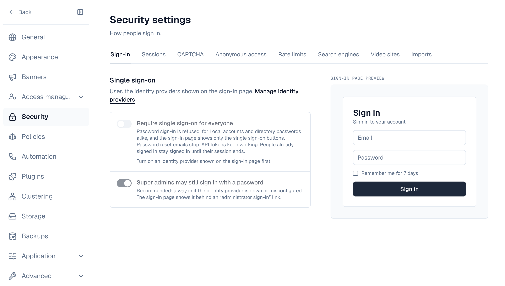

Settings live in PostgreSQL, encrypted where they hold a secret, and apply to every server as soon as they're saved. Settings (at the bottom of the left navigation) shows each person only the pages their permissions allow. Every change is recorded in the audit log, and most raise an event a policy can stop or automation can react to.

1. Installation
| Page | What it configures | Permission | Tier | Docs |
|---|---|---|---|---|
| General | The address people use to reach the Wiki, and the Help menu's links | settings:write | All | Install the Wiki |
| Appearance | Application name, brand colours, logos and browser icons per theme | settings:write | Enterprise | Branding |
| Banners | Announcements at the top of every page | settings:write | All | Banners |
| Application → Licensing | The licence, its use against limits, and updating it | licenses:admin | All | Licensing |
| Application → Email | SMTP or Amazon SES, the sender, a test message | email:manage | All | |
| Clustering | Servers, their health, leader, Redis state | Super admins | All (a cluster needs Pro) | Single server & cluster |
| Storage | Where images, videos and platform files are stored | storage:admin | All | Storage |
| Backups | Backups, targets, encryption, restores | backups:read / backups:write | All | Backups |
2. People and access
| Page | What it configures | Permission | Tier | Docs |
|---|---|---|---|---|
| Access management → Users | People: create, invite, suspend, roles, sessions | users:read / users:write | All | Users & directories |
| Access management → Groups | Groups and their members | groups:read | All | Users & directories |
| Access management → Directories | Local, LDAP, Active Directory, Entra ID, Google Workspace, SCIM, Delegated | directories:read | All (some directories Pro or Enterprise) | Users & directories |
| Access management → Single sign-on | OpenID Connect and SAML providers | sso:manage | Enterprise | Single sign-on |
| Access management → Applications, Service accounts | OAuth applications and non-human accounts | oauth_apps:manage | Pro | OAuth applications |
| Policies | Rules that block, warn or adjust actions | policies:read | Pro | Policies |
| Automation | Alerts, webhooks and emails on events | automation:read | Pro | Automation |
| Plugins | Install, permissions, settings and data of plugins | plugins:read | Pro | Plugins |
| Kee | The Wiki's AI: the switch, providers and models, features, the Kee permissions grid, limits, the budget, usage and data handling | ai:manage (usage: ai:usage:read) | Pro | Set up Kee |
3. Security tabs
Settings → Security has a tab for each part. The first five are the platform's; the rest are the Wiki's own.
| Tab | What it configures | Permission | Docs |
|---|---|---|---|
| Sign-in | Require single sign-on, and whether super admins may still use a password | sso:manage (Enterprise) | Single sign-on |
| Sessions, CAPTCHA | Session lifetimes and limits; CAPTCHA after failed sign-ins | settings:write | Users & directories |
| Anonymous access | Whether signed-out visitors may read public spaces and questions | settings:write | Anonymous access |
| Rate limits | Request budgets and overrides | settings:write | Rate limits |
| Search engines | What robots.txt tells crawlers | settings:write | Search engines |
| Video sites | YouTube, Vimeo and other sites whose players pages may embed; taking a site off stops it on every page | settings:write | Attachments & media |
| HTML blocks | Whether pages may hold HTML blocks (off by default), who adds them, and the only sites they may reach | settings:write | Blocks and macros |
| Slides | Who adds slide decks to pages (page editors by default), the largest deck, and the only hosts HTML decks may load libraries from | settings:write | Slides |
| Attachments | The largest PDF or other file attached to a page, and the file extensions no page takes | settings:write | Files and attachments |
| Imports | Whether space admins may import, and the largest export | settings:write | Imports |
| Mirrors | Whether spaces may mirror git repositories and uploaded archives (Pro), who sets mirrors up, the largest archive and internal git hosts | settings:write | Mirror spaces |
| Link previews | Whether the server may read a linked page to fill in a link card (off by default), and hosts it never reads | settings:write | Link cards |
4. Advanced
| Page | What it configures | Permission | Tier | Docs |
|---|---|---|---|---|
| Logging | Log levels, log files, exports, the audit log | audit_logs:read | All (audit log Pro) | Logging & audit |
| System check | Health of every dependency and server | settings:write | Pro | System check |
| Alert tuning | Mutes and thresholds of health alerts | settings:write | All | Alert tuning |
| Scheduled jobs | Every background job, the Wiki's included: imports, analytics, scheduled publishing, reminders | scheduler:read | All (changes Pro) | Scheduled jobs |
| Event deliveries | Durable event deliveries and failures | events:admin | Pro | Events |
5. Wiki screens outside Settings
| Screen | What it configures | Who | Docs |
|---|---|---|---|
| Templates | The template library every space starts pages from: ready-made and your own templates | wiki_templates:manage: super admins | Template library |
| Settings → Space categories | The categories that group the space list; each space is in one or none | settings:write: super admins | Spaces |
| Labels (left navigation) | Rename, merge or remove a label on every page and space of the installation | wiki_labels:manage: super admins | Labels & feedback |
| Q&A → Settings | Allow public questions in the organization | Q&A moderators: organization admins | Q&A moderation |
| A space's Settings, Members and Import tabs | Name, description, visibility, icon, labels, category and archiving; who has which role; imports | The space's admins | Spaces |
| A space's Settings → Kee tab | Whether Kee works in the space, and the notice for readers | The space's admins | Kee in a space |
| Analytics (left navigation) | Nothing to set: views, readers and content health | Pro licence | Analytics |
6. Settings that aren't in Settings
| What | Where |
|---|---|
| Encryption key, first-boot database URL, ports, proxies, request size | Environment variables |
| Database, Redis, storage, licence when the server can't start | The recovery page |
| Each person's language, theme, notifications, sessions, tokens and calendar address | Their profile and the calendar (Profile & notifications, Calendar feeds) |